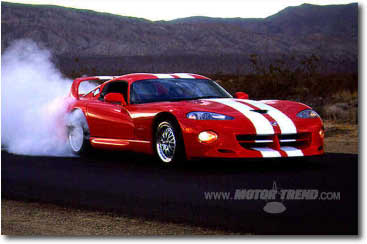

Nice spoiler.(Venom 600 pictured here)
Specs(Venom 650R)
Price |
$108,500 |
Top Speed |
215mph |
Acceleration |
|
Engine |
|
0-30mph |
1.5sec* (!!) |
Type |
V10, 20valve OVH |
0-60mph |
3.3sec* |
Displacement |
8.4L(8424cc) !! |
0-100 |
7.1sec* |
Power |
650hp@5800rpm (!!) |
1/4 mile |
11.2sec/131.7mph* |
Torque |
650 lbs-ft@4500rpm (!!) |
Weight |
3,250 lbs |
Handling |
|
Gas mileage |
N/A |
Skidpad |
1.06g (!!) |
City |
N/A |
600ft slalom |
75.1mph (!!) |
Highway |
N/A |
Powertrain |
Front engined, rear wheel drive, 6 speed manual |
(? = incomplete data or unverified info, N/A = info Not Available, * = tested with special aftermarket tires)
Note: The version from which these specs were obtained costs $165,450 due to the required options and special paint.
Beyond the specs:
John Hennessey heavily modified this Dodge Viper, as you can see from the specs above the modifications were not just useless visual add-ons. This Venom priced at an extremely low price for a vehicle that is only .1 seconds slower to 60 and across the quarter mile than the much more expensive Mclaren F1! Its acceleration under 130mph is second only to the Mclaren F1! With such massive torque it had to be fitted with special tires (which were technically street legal) to prevent wheel spin and allow the testers to see it true performance. The tires still did not help acceleration much though, and they only affected off the line acceleration. The handling numbers are unmatched by any production car ever and doing 75.1mph on the 600ft shalom required the drivers to change direction from left to right suddenly every .9 seconds! With so much awesome speed at such a bargain price I do not see why an enthusiast would buy anything else priced above $160,000! However, with 200more hp and 160 more lbs.-ft of torque to add to the difficulty of driving a viper this is not for the under-skilled driver (a.k.a. non-racecar driver). Still it has the tires enlarged to 18 inches front and rear, the weight has been reduced with carbon fiber and fully function front and rear spoilers added it should make up for some of that extra power. This car is for the highly skilled pure driving enthusiast who can resist the temptation to tap on the throttle when the radar detector (a required device on a car this fast, in my opinion) is warning you. Remember to exercise control when driving this car, after all 100mph comes as fast as a Jeep Cherokee can hit 60mph.
~Oracle